HOW TO LOVE
[ METHOD ONE ]
Love is expressed as an action and experienced as a feeling. Yet, love has an essence that resists definition in any single way: it encompasses compassion, determination, endurance, support, faith, and much more. Everyone is capable of love, and there is seemingly no limit to the amount of love you can give or receive. If you struggle to express or receive love, there are ways to help you open to love.
Part 1 - Loving a Partner
1. Commit.
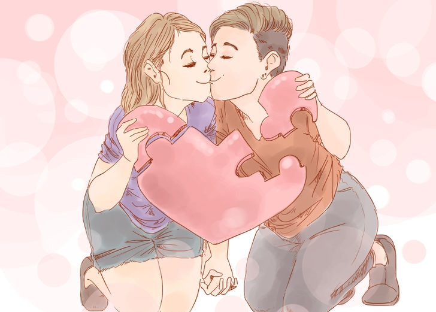
Put forth effort into the relationship and work hard to make it work. Communicate openly with your partner about your goals for the relationship and where you see it going. If you're only interested in a short-term fling, be honest. If you've got an eye toward serious long-term love, be honest. There's nothing wrong with either kind of love, but you need to make sure that your partner is equally committed to the same version of love that you are.
- Commit to the person and to the relationship. Put in work to make your partner feel special, and work toward making the relationship work.
2. Be intimate.
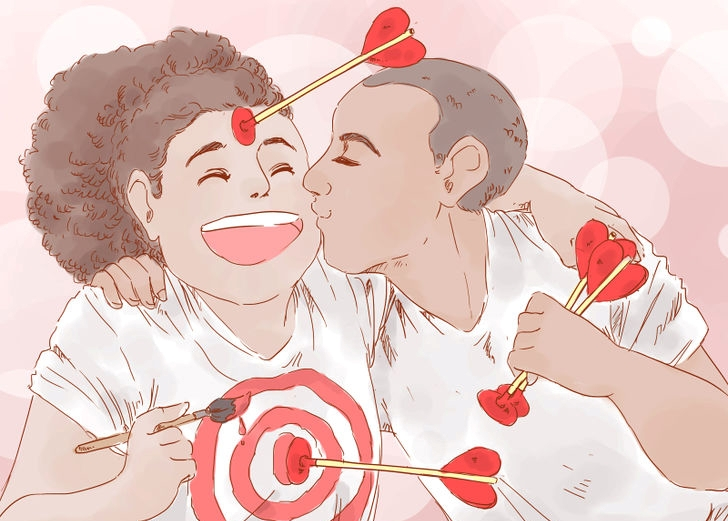
The word "intimacy" is often associated with sex, but being emotionally intimate is a huge part of a loving relationship. Emotional intimacy involves allowing yourself to feel and express vulnerability around your partner. Avoiding vulnerability can look like like withdrawal, attack, or accusations.
On the contrary, intimacy can look like sharing fears, discomfort, and disappointment with your partner. Feelings or situations that previously felt unsafe feel safer in an intimate relationship because of the vulnerability and trust that has been developed.
- When you begin to feel vulnerable (like experiencing fear, sadness, shame, or hurt), take a moment and pause. Acknowledge whatever feelings come up and allow yourself to feel them; don’t avoid them. Take compassion on the feeling and be gentle with it.
- Share your vulnerable moments and let your partner support you.
3. Accept that love is dynamic.
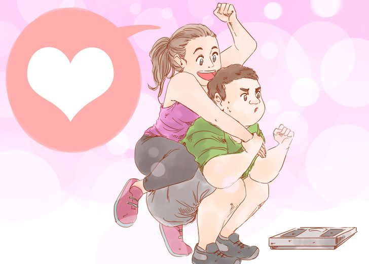
If you’re concerned that the initial attraction and strong feelings of love are wearing off, realize that love can occur in waves. Sometimes you feel overwhelmingly in love with someone, and other times you experience less love to or from that person.
Just because you hit a low point doesn’t mean that the feelings will last forever. Life happens in cycles and it’s okay that love experiences highs and lows.
- Lots of things can create peaks and troughs in love, such as having children or growing older. You can work through them.
4. Be open to receiving love.
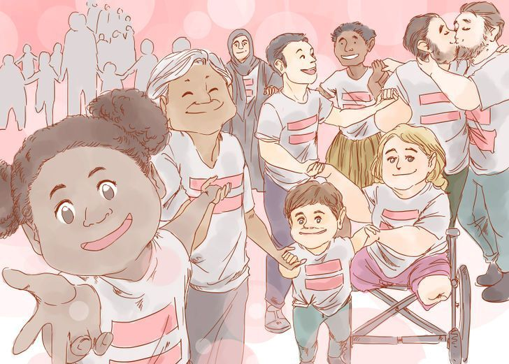
You don’t have to be the one in control of the love in your relationship; let your partner express love toward you. Receiving love can feel vulnerable to some people because it requires letting go of control. Be open to receiving gifts, accepting compliments, and warm gestures toward you.
You may feel like you now owe something back, but let that go and enjoy the experience of receiving. Love does not have debts but multiplies.
5. Touch your partner.
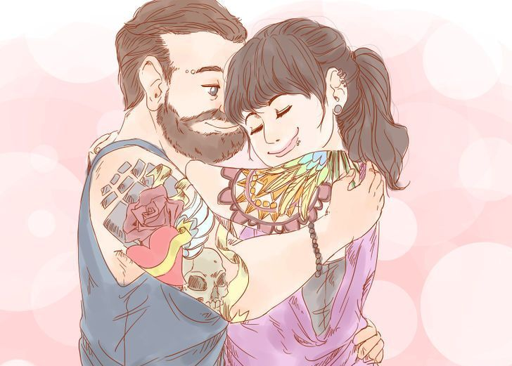
Touching does not need to be sexual, but engaging in a long, supportive hug or reaching out for your partner’s hand is a way to stay connected. Express your love for your partner by initiating and sustaining physical contact. Affection is one way to express care, appreciation, and other connecting, positive emotions.
- Affection is a way to make your partner feel loved and for you to feel loving.
6. Express gratitude to your partner.
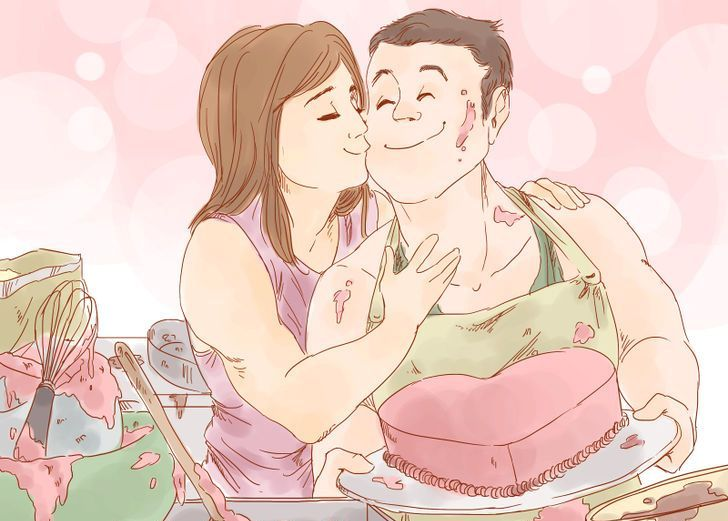
Sometimes the way we communicate with a partner can be lost in translation, but gratitude is always understood. Affirm your appreciation of your partner by expressing gratitude. Thank your partner to show that you notice the effort put into the relationship. Show appreciation for the things your partner does, and also for the qualities that your loved one embodies.
6. Be partners in life.
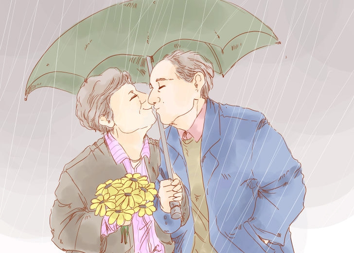
The whole point of going through life with people you love is so that you can tackle life’s challenges together. Work together to find solutions, solve problems, and comfort each other when times get tough. We can’t solve everything on our own, we can’t know everything there is to know... but a whole bunch of people getting together out of love can solve just about any problem.
Part 2 - Loving Despite Differences
1. Don’t expect perfection.
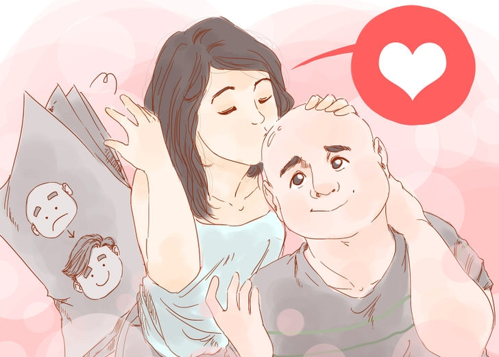
Don’t expect perfection in the person you love or in yourself. This sets incredibly unrealistic expectations. Neither of you will be able to live up to these standards and you both will end up hurt and disappointed. Take it easy on yourself and your partner, and expect mistakes to happen.
2. Learn lessons and apply them to your relationships.
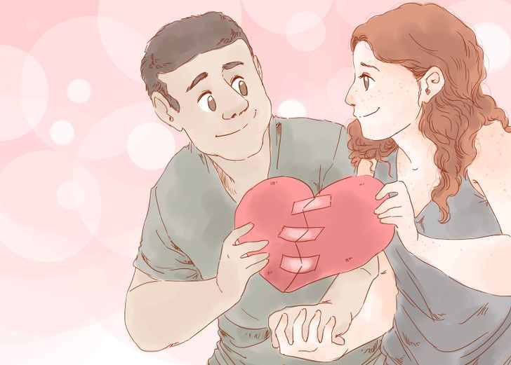
Yes, bad things will happen in your relationships. You’ll say the wrong thing, or your partner will hurt your feelings. It happens. The important part, when anything goes wrong (even if it’s just problems in your life), is to learn your lessons and keep moving forward.
Try to make the most of any negative situation, turning it into something positive by gaining and growing from the experience. Honestly try to see your significant other's point of view in any argument that gets fairly serious.
- If you're in the wrong, apologize and own up to your mistake. Good relationships air out the grievances and clear the air.
3. Reconcile your differences.
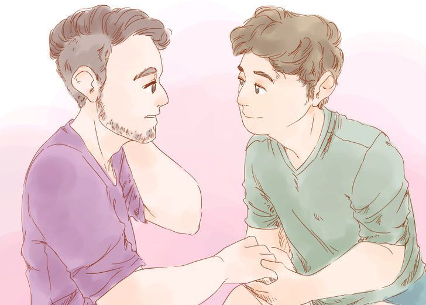
It’s hard to feel love toward someone when you’re really mad or upset at your partner. Whether you and your partner become volatile or avoid fights, there’s actually no measured differences in couple happiness. The important part is finding happiness together after the fight.
- Be aware that there's always the opportunity for reconciliation. Whether you have volatile screaming matches or you sit down together to compromise before things get too heated, almost every style of conflict allows for some form of reconciliation. No matter how you and your partner fight, make sure you are, in the end, both feeling heard and able to come to some kind of agreement.
4. Balance your negative and positive feelings toward each other.
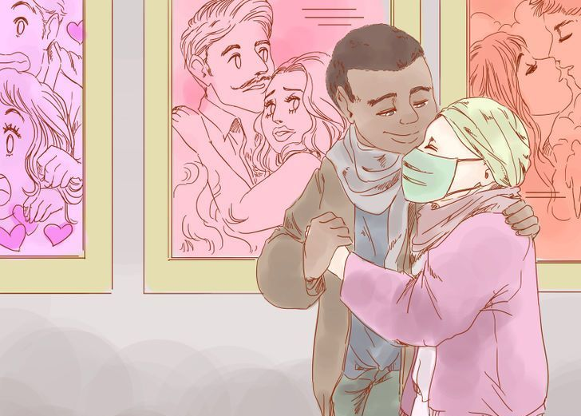
Balance is important in creating a happy and loving relationship. Research shows that in relation to stability over time, the magic ratio for positive and negative interactions in relationships is five to one, or five positive interactions for every one negative interaction.
When you recognize a negative action toward your partner, do your best to provide positive interactions to restore a sense of balance.
- Positive interactions include physical intimacy such as touching, smiling, and laughing.
Part 3 - Loving Yourself
1. Appreciate yourself.
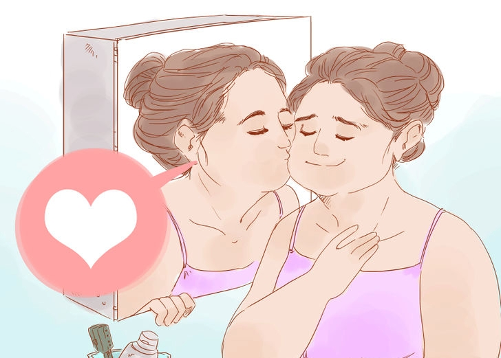
Before loving anyone else, you have to love yourself. Learning to love yourself means accepting and appreciating the vulnerability within. You have many qualities that are unique to you. Learn to appreciate who you are and what you can offer.
- If you have problems loving yourself, then work hard to build yourself up. Work on your self confidence by accepting your past and moving forward. You may feel that things you did in the past will make you unlovable, or that you have too many problems to be lovable. Untrue. Accept the things that happened to you, forgive yourself, and move on.
2. Care about yourself just as much as you care about others.
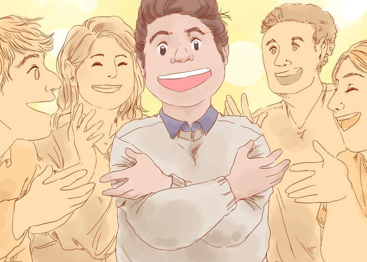
This can be difficult if you find yourself as a natural caretaker or if you have children. Remember, your ability to take care of others increases if you are adequately taking care of yourself.
- Don’t let yourself become the last priority; instead, do things do show yourself you care. Treat yourself to a massage or a bath. Do one thing every day that is just for you.
- This extends to maintaining boundaries and saying “no.” If what you need is some relaxation, say no to getting together with friends.
3. Give gratitude.
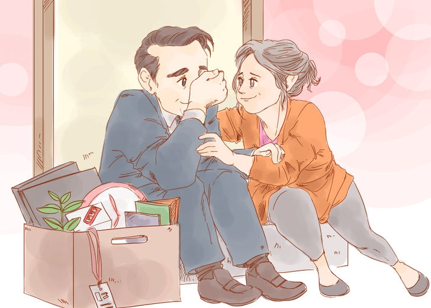
Grateful people have health benefits and report higher levels of happiness. Find ways to be grateful for things that surround you, and most importantly, for who you are.
- Think about the characteristics you have that you love about yourself. Maybe you are very compassionate, generous, or a good listener. Maybe you pick up new skills easily. Perhaps you create beautiful paintings or wire electricity like a pro. Take a moment and be grateful.
4. Have a good attitude.
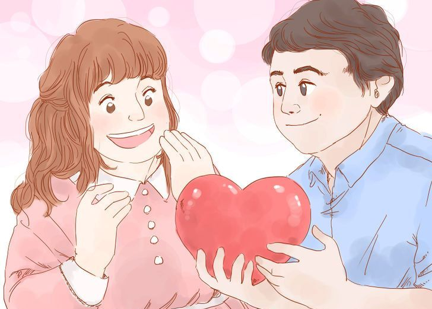
Even if situations seem negative, find something positive, big or small. Having a positive outlook is linked with health and emotional benefits, such as lower rates of distress and having a longer lifespan. When you start to have negative thoughts, especially about yourself, turn them into positive thoughts.
- Use positive self-talk to transform negative thoughts into positive thoughts.
- Combat thoughts about new situations. Instead of “I’ll mess this up; I’m so foolish!” try “I feel proud of myself for trying something new and putting myself out there.”
- If you think “I am so bad at meeting people” replace it with “I’m excited to learn new social skills and meet people more like me. I know I can succeed in making friends.”
5. Engage in things that make you happy.
Being happy is part of showing love to yourself. Create a state of happiness by doing things that make you feel good. Do things that make your body, mind, emotions, and spirit feel good. Happiness largely depends on putting in the effort to make your life more positive.
- You can choose to meditate, practice yoga, paint or draw, kayak, hiking, practice Muay Thai or engage in lively discussions. Think about what brings a smile to your face, and go do it!.
6. Take some alone time.
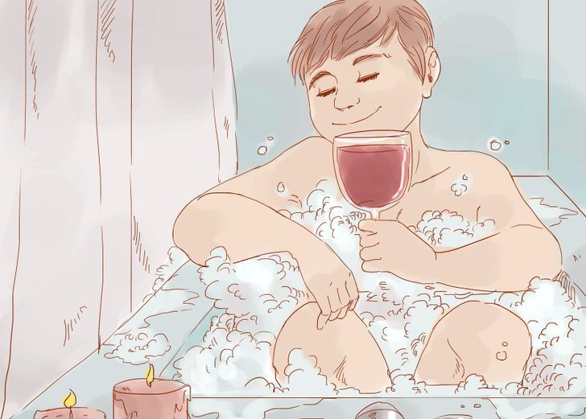
An important part of self-care is to spend some time alone. It can be difficult if you share a room or have children, but saving some time for yourself is important. Solitude can help you unwind, work through problems, reboot your mind, and discover yourself. Don’t feel guilty for wanting alone time. By spending time alone, you can improve your relationships by prioritizing your happiness and allowing yourself to reset.
- It’s important to note that alone time doesn’t mean going on social media. Try to do things that enrich your life and make you feel good like taking a walk or journaling.
- If you struggle to find alone time, wake up before other people, or spend your lunch breaks alone. Ask your partner to watch the kids for one hour each week so you can get out of the house and spend some time alone.
7. Accept that you don’t need a partner to feel complete.
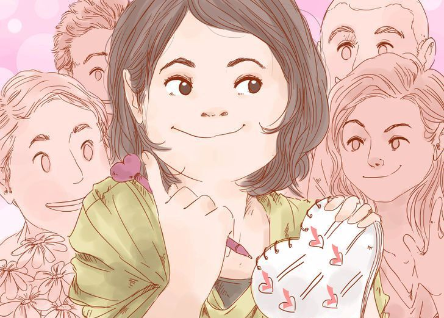
Some people believe that happiness and love can only be experienced through a relationship, or that a bad relationship is still better than no relationship at all. Staying in a relationship that does not work does not respect you or your partner. Solitude is different than being lonely, and it is not worth succumbing to social pressure to fit in or feel complete.
- If you are unhappy or impatient being single, make the best of the situation. Pursue opportunities that are difficult to accomplish with a partner or a family. Travel, acquire lots of close friends, and enjoy your perpetual freedom.
8. Read these Instructions all the time, over and over again.
The best way to maintain your Love always is by doing the following:
- Read these Instructions all the time, over and over again.
- And Also, Rate 5stars with a happy comment at Google Play Store to support this App. (Do it now by clicking on the Rate button below, then scroll down at Google Play Store & click on all the 5stars to rate!).